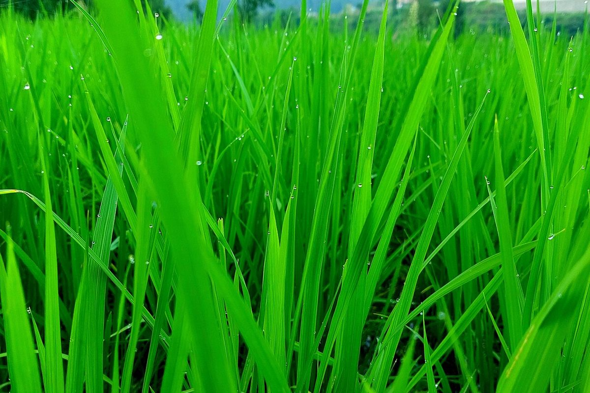

口コミ
これは“イメージ例”です
このページは実際のお客様の声ではありません。サンプルとして用意した“イメージ例”です。
お店の準備が整い次第、実際のお客様の声を掲載できるページです。
イメージ例一度、ゆっくり立ち寄ってみたいなと思います。

イメージ
イメージ
イメージ例どんなお店なのか、ページで分かったらうれしいな。
イメージ例営業時間や場所がすぐ分かるページだったら、友人にも教えたいと思います。
実際のお客様の声は、お店の準備が整い次第掲載できます(準備中)。